Qualitative Results
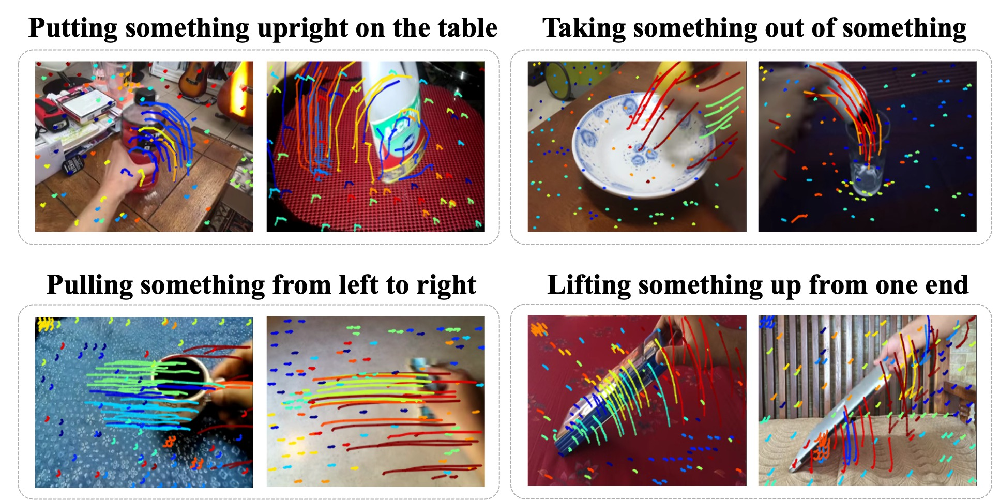
Visualization of action trajectory similarities across four classes, where our semantic-based sampling enables object-focused trajectories. Each quadrant demonstrates intra-class motion consistency while maintaining inter-class discriminative features.
Unfolding Something
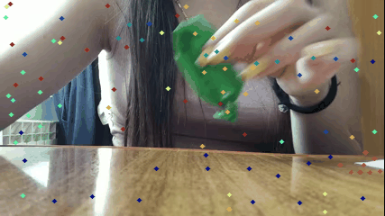
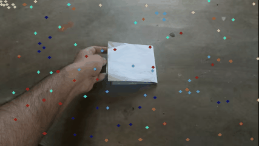
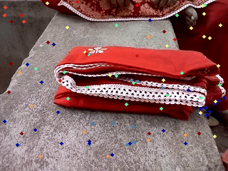
Twisting Something
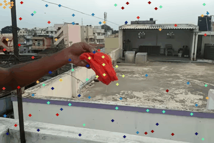
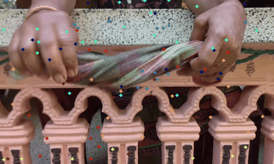
Putting Sth Next to Sth
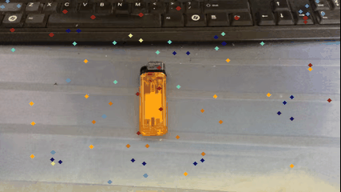
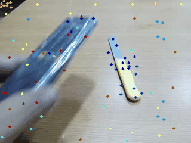
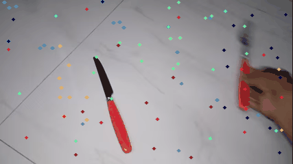
Poking a Hole into Sth
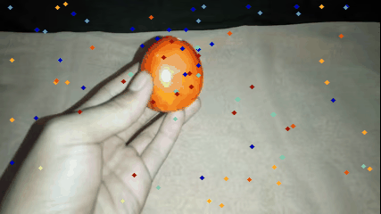
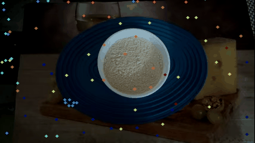

More qualitative results of our semantic-aware point trajectories. For each action class, we randomly selected videos and overlaid them with our extracted semantic-aware point trajectories. Our method successfully focuses on action-relevant objects, even when they are small. We observe that trajectories from the same action class follow very similar motion patterns.